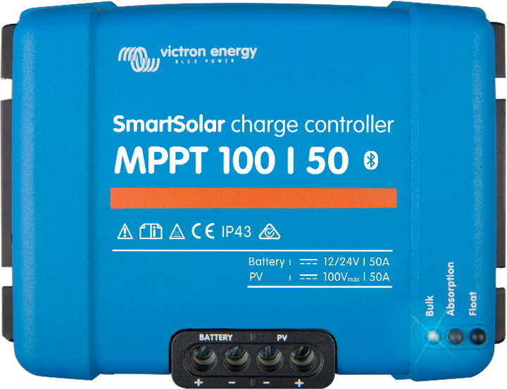

A solar charger gathers energy from your solar panels, and stores it in your batteries. Using the latest, fastest technology, SmartSolar maximises this energy-harvest, driving it intelligently to achieve full charge in the shortest possible time. SmartSolar maintains battery health, extending its life.
The SmartSolar charge controller will even recharge a severely depleted battery. It can operate with a battery voltage as low as 0 Volts, provided the cells are not permanently sulphated or otherwise damaged.
